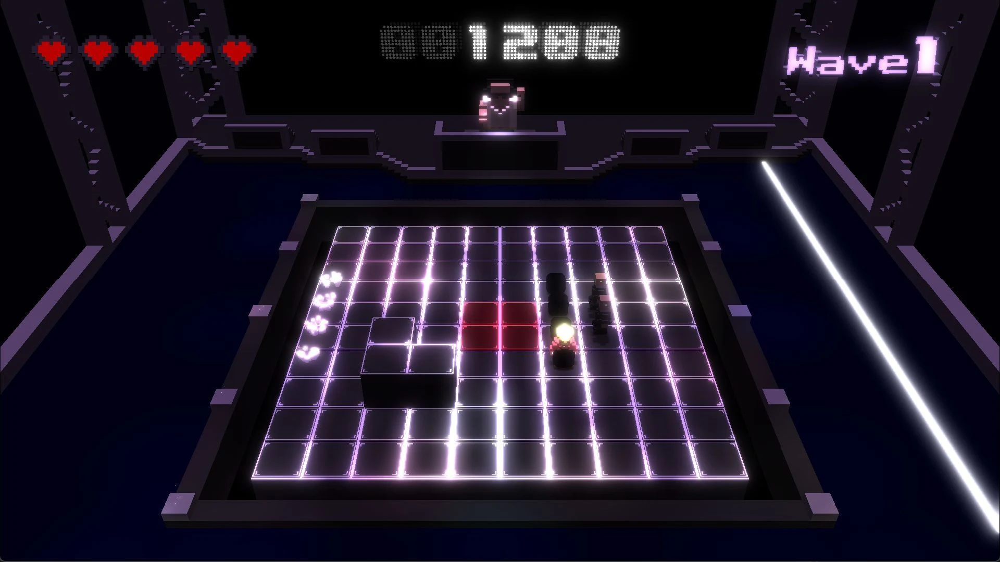

ライトの配置と調整
ステージ内のライティングを担当し、光の配置と調整で画面を作り込みました。ゲーム開始時、リザルト時、ゲーム中のUIにもアニメーションを加えています。
WORK 04 / 2年次 / 3人チーム
初めて自作ゲームエンジンをチームへ提供した作品です。複数ライトや複数オフスクリーンなど、エンジンで実装した機能をゲームの見た目と演出に活用しました。

PROJECT INFORMATION
学科内評価 8 / 78位。
使用したKashipan Engineを知るMY CONTRIBUTION
ステージ内のライティングを担当し、光の配置と調整で画面を作り込みました。ゲーム開始時、リザルト時、ゲーム中のUIにもアニメーションを加えています。
ステージの後ろにある画面へオフスクリーンのテクスチャを貼り付けました。別の描画結果をステージ内に表示できる仕組みを、UIの一部として活用しています。